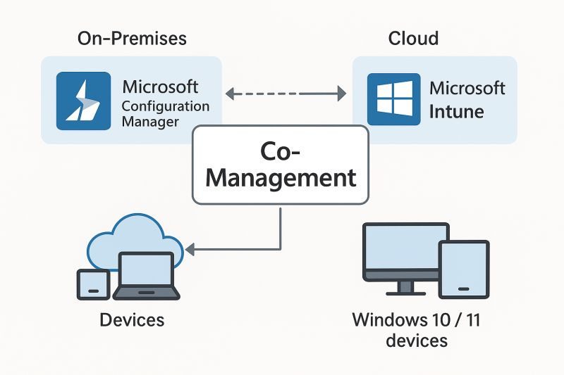

Hybrid Co-Management: SCCM → Intune
Moving from traditional SCCM to co-management with Intune, step by step, without breaking operations.


Hybrid Infrastructure
Modern management without a big-bang cutover
Using co-management to gradually shift workloads to Intune while SCCM remains a trusted backbone.
Many environments can’t “flip a switch” from SCCM to Intune. I worked on phased co-management that kept existing investments stable while introducing Intune-based workloads where they made the most sense first—like compliance, configuration and selected app delivery.
Objectives
- Enable co-management for eligible devices with minimal disruption.
- Shift priority workloads to Intune (compliance, configuration, selected apps).
- Retire legacy configurations gradually while maintaining reporting and control.
Responsibilities
- Assisted with co-management enablement and workload selection strategy.
- Helped define pilot rings, success criteria, and rollback options.
- Aligned SCCM and Intune policy sets to avoid conflicts for managed devices.
- Supported communication and documentation for IT and end users.
Technologies & Tools
- SCCM / MECM
- Microsoft Intune
- Co-management
- Azure AD / Entra ID
Impact & Outcomes
- Improved coverage and visibility by combining SCCM with cloud-attached Intune.
- Enabled modern configuration and compliance checks for remote devices.
- Reduced operational risk by avoiding an all-at-once migration.
Project information
- Category: Hybrid Infrastructure
- Client: Enterprise Environment
- Project window: 2023 – 2025
- Back to Portfolio